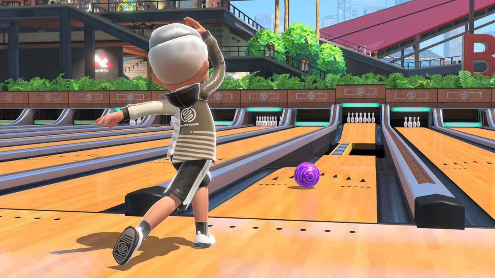
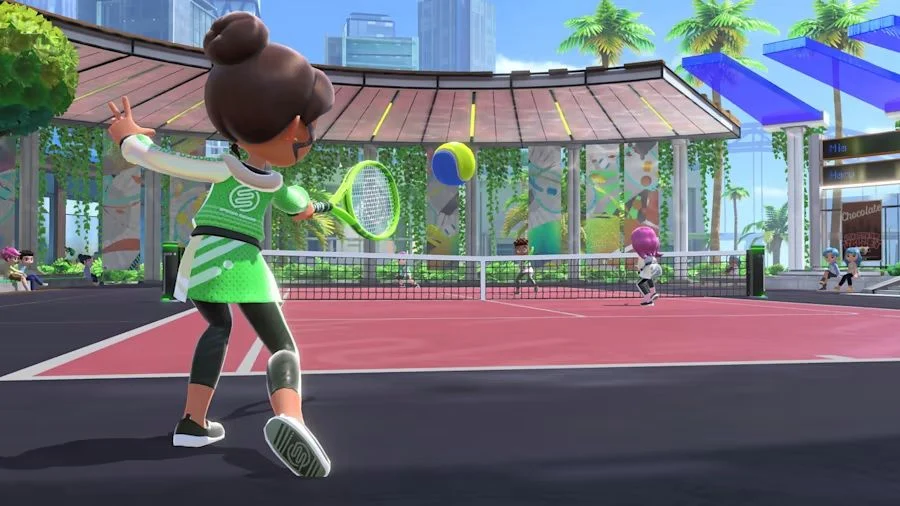
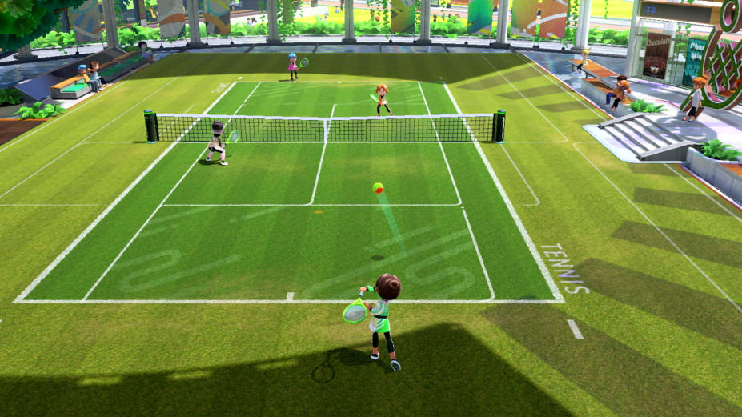
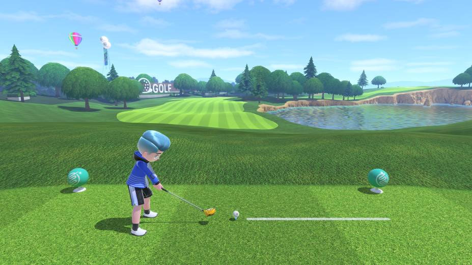
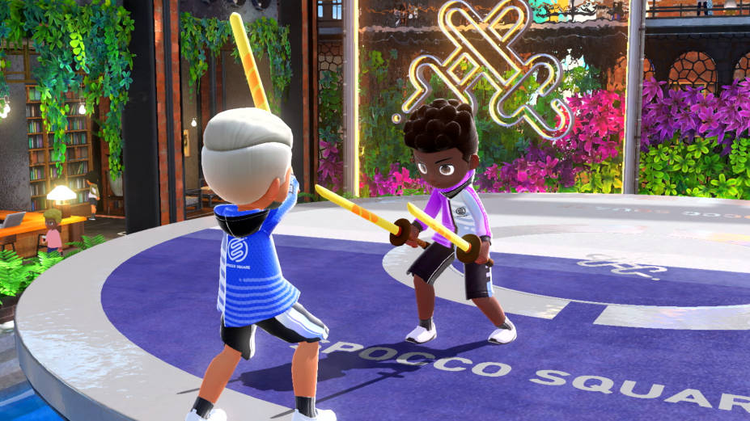
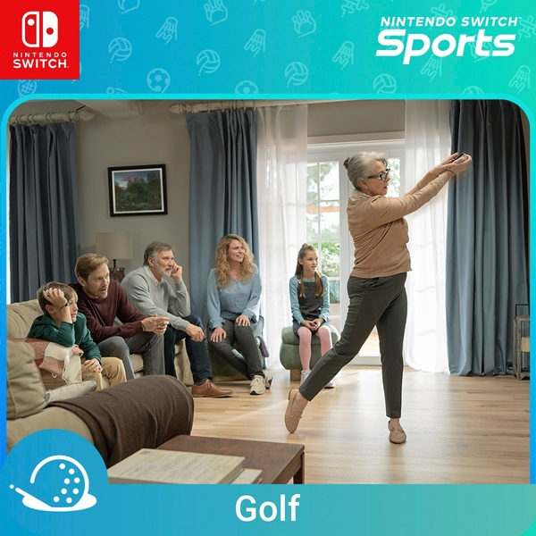
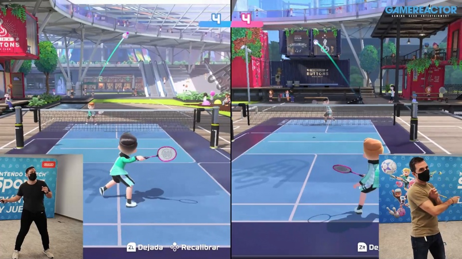

Nintendo Switch™ Sports – Game Nintendo Switch
1.150.000
VND
Di chuyển với Bóng đá, Bóng chuyền, Bowling, Quần vợt, Cầu lông và Chambara (Đấu kiếm) bằng bộ điều khiển Joy-Con! Các điều khiển trực quan, vì vậy bạn có thể đánh vào sân (hoặc làn đường, sân hoặc đấu trường) và bắt đầu. Với các chuyển động được kiểm soát, bạn có thể làm cong trái bóng bowling của mình, thêm độ xoáy vào một cú đánh quần vợt hoặc thậm chí sử dụng Joy-Con với phụ kiện Dây đeo chân để đá bóng trong Trận đá luân lưu. Gia đình và bạn bè có thể tham gia vui chơi trên cùng một hệ thống hoặc trực tuyến. Thêm vào đó, một môn thể thao thứ bảy được lên kế hoạch bổ sung thông qua bản cập nhật miễn phí vào mùa thu này, sẵn sàng tham gia chơi Golf!
Bảo đảm 100% chính hãng
- 2004'S Store chỉ làm việc trực tiếp với các thương hiệu và nhà phân phối chính thức
- 2004'S Store kiểm soát chặt chẽ quy trình hàng hóa được chấp thuận pháp giao dịch, nhập khẩu và khai thuế
- Hỗ trợ mua máy trả góp lãi xuất 0% qua thẻ tín dụng, nhanh hơn, tiết kiệm hơn
Hơn mười năm trước, game thủ trên toàn thế giới sẽ rất vui mừng với sự ra mắt của Wii Sports, được phát hành cùng với Wii của Nintendo vào năm 2006. Mọi con mắt đều đổ dồn vào phong cách chơi mới sử dụng chuyển động của người chơi Thay vì nhấn các nút bằng cần điều khiển, Wii Mote đã khiến nó trở nên phổ biến ngay cả tại lễ trao giải Oscar đến nỗi nó đã được đưa lên trình chiếu.
Và với danh tiếng này, các trại game khác vẫn đang bắt chước. và tạo ra một xu hướng game thể dục phổ biến một lần nữa của Pu Nin để tiếp tục vào năm 2009 với Wii Sports Resort, được bán kèm với các phụ kiện Wii Motion Plus giúp tăng độ chân thực khi chơi. Và tiếp tục với Câu lạc bộ Thể thao Wii trên WiiU, không thành công lắm vì nó không có gì mới. Nhưng khi nói đến các game tập thể dục, đầu tiên người ta phải nghĩ đến series Wii Sports của Grandfather Nin.
Tuy nhiên, xu hướng dành cho các game cảm biến chuyển động đã dần biến mất, mặc dù Grandfather Nin đã đưa nó trở lại như một phần của các bảng điều khiển lai như Nintendo Switch, nhưng game ra mắt không phải là phần tiếp theo của Wii Sports. Nhưng sau 5 năm kể từ khi phát hành Chuyển đổi, Pu Nin đã gây bất ngờ cho người hâm mộ của game với việc phát hành. Nintendo Switch Sports Đây được coi là phần mới của game thể dục huyền thoại trên Switch như tên gọi của game.
Đồ họa trông quá đẹp mắt.
Điều đầu tiên thực sự ấn tượng là hình ảnh bất ngờ trong game vì bản gốc không tập trung vào điểm này. Và cách tiếp cận của game không tập trung vào vẻ đẹp hình ảnh mà trên Nintendo Switch Sports, Grandfather đã áp dụng công nghệ nâng cấp độ phân giải FidelityFX Super Resolution, giúp hình ảnh trở nên sắc nét hơn so với thực tế. Mặc dù hình ảnh vẫn được thiết kế theo phim hoạt hình trông dễ thương nhưng nhìn không được đẹp mắt, độ chi tiết của các cảnh phim hơn hẳn Wii Sports.
Còn các tính năng gốc, ký tự Mii mà ngành này không có. Nhưng có một hệ thống tạo nhân vật của riêng bạn có thể tùy chỉnh cả giới tính, ngoại hình, kiểu tóc, màu da nhưng không quá chi tiết theo lối chơi tập trung vào sự vui nhộn hơn. Các nhân vật của chúng ta chân thực hơn chứ không phải LEGO như Wii Sports, trong khi nhạc nền không bắt tai và phần lồng tiếng của game đã thay đổi. Nhưng nhìn chung thì không tệ, nhưng cá nhân tôi thích nhạc phim của phần trước hơn.
Phong cách chơi tập trung vào gắng sức như thường lệ.
Giống như bản gốc, lối chơi của Nintendo Switch Sports mô phỏng các môn thể thao với bộ điều khiển cảm biến chuyển động. Đổi từ Wii Mote sang Joy-con coi như tốt như trước. nhưng không nổi bật hoặc thực tế Người chơi phải lấy cần điều khiển và hành động theo game đã thiết lập. Đối với lĩnh vực này, 6 môn thể thao sẽ được bao gồm, đó là bowling, tennis và bóng đá, bóng chuyền, cầu lông, đấu kiếm và golf sẽ được bổ sung sau đó.
Đối với game quần vợt, rất dễ chơi chỉ với một cái lướt tay của bạn. Nhưng vẫn có những chi tiết như hướng đánh bóng. Ai đã từng chơi Wii Sports thì cũng vậy, không thay đổi. Tiếp tục với bowling đơn giản chỉ cần giả vờ ném bóng. và cũng sử dụng bàn phím để đặt hướng Bạn cũng có thể thực hiện động tác búng tay để ném bóng như xoay. Nó cũng đi kèm với các chế độ chơi bowling thông thường và ngoài thế giới, nơi các chướng ngại vật kỳ lạ như sàn trượt hoặc vách ngăn khiến việc chơi trở nên khó khăn hơn để thêm vào thử thách.

Đối với hàng rào không phải là mới kể từ Wii Sports Resort, nó hoạt động giống như bản gốc. bởi vì chúng ta phải nắm bắt niềm vui thay vì một thanh kiếm Và có thể xác định hướng cắt, đồng thời có thể dùng để lập các quân bài để ngăn chặn các đợt tấn công cần tìm phản đòn. Và cũng có một cặp kiếm để lựa chọn. Nhưng đừng lo lắng về việc nó bạo lực vì nó không phải là một thanh kiếm thật. Và mục đích là làm cho thí sinh rơi xuống nước mà thôi.
Các môn thể thao mới thêm đa dạng
Phần mới, ‘Bóng chuyền’, rất vui, nhưng hơi hỗn loạn. Bởi vì chúng ta phải thực hiện nhiều động tác khác nhau, bao gồm giao bóng, đặt bóng, nhảy tát và nhảy khối mà chúng ta phải thực hiện theo quy định của game. Và nó có thể ra đủ mồ hôi nếu chúng ta chơi nghiêm túc, tiếp theo là “đánh cầu lông” vui hơn mong đợi vì nó sử dụng một tốc độ đáng kể so với quần vợt. và một cú tát tốc độ cao Và có một nhịp để chơi, cũng có một cú đánh rơi quả bóng phải được ép vào nhau. Riêng tôi, chơi với bạn bè càng vui thì càng vui.
Nhìn chung, nếu bạn đã chơi Wii Sports trước đây, Nintendo Switch Sports vẫn không có gì khác biệt. và cũng bổ sung các môn thể thao mới Bao gồm cả việc sử dụng chân để chơi với Ngoài ra còn có một chế độ trực tuyến cho phép chúng tôi ở lại game trong một thời gian dài. Và với thời đại sinh động, tụ tập cùng nhau để chơi game trong một phòng có thể không an toàn. Ai muốn tập thể dục, đó là một lựa chọn thú vị khác, nhưng nói thẳng ra, nếu bạn muốn giảm cân nghiêm túc, tốt hơn nên đi với Ring Fit vì có một chương trình tập thể dục cố định, nhưng Nintendo Switch Sports chúng tôi phải lên lịch để chơi. kém hiệu quả Nhưng nếu chơi để giải trí, nó tốt như Wii Sports.